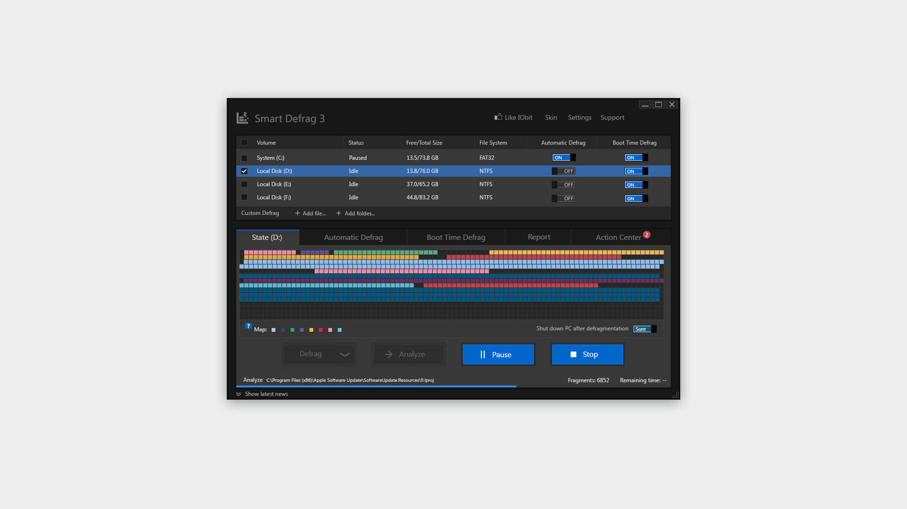

Smart Defrag
UI Design
设计时间 | 2012年
Smart Defrag是一款Windows平台上的硬盘优化软件。类似于Windows系统自带的“磁盘碎片整理”程序，但Smart Defrag更为强大，有更快的碎片整理速度和更为丰富的功能和易用的界面。

UI Design
设计时间 | 2012年
Smart Defrag是一款Windows平台上的硬盘优化软件。类似于Windows系统自带的“磁盘碎片整理”程序，但Smart Defrag更为强大，有更快的碎片整理速度和更为丰富的功能和易用的界面。